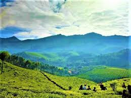
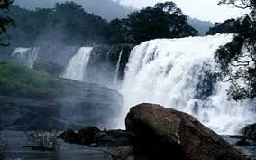
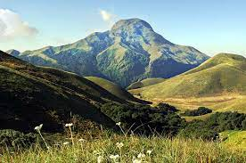
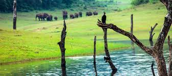

Ayyapancoil Hanging Bridge
Ayyappancoil hanging (Suspension) bridge is built across the Periyar River, connecting the Ayyappancoil Grama panchayath and Kanchiyar Grama Panchayath in Idukki district, Kerala. The new hanging bridge will give a new hope to the villagers as the can connect easier. This bridge is the longest hanging suspension bridge in the district. The suspension bridge draws a lot of tourists owing to its picturesque scenery

Hill Station of Idukki
Hill stations in Idukki add up to a big list. Munnar is the leading hill station, familiar to almost everyone visiting Kerala. The other well known hill stations are Devikulam and Peerumedu. Locations such as Lockhart Gap, Top station and Anamudi are picnic spots around Munnar.

Waterfalls in Idukki
The hills of Idukki may be the ‘rain’s own country’, when we think about the amount of rain falling there. Violent downpour morphed into streams and cascades sparkle amidst mountainsides of verdant greens. The wooded forests of the Western Ghats are hidden with cascading showers that enchant the visitors. Waterfalls are in plenty. Major ones are Attukal, Chellarkoil, Nyayamkadu, Power House, Rainbow, Thommankuthu, Thoovanam, Cheeyappara and Valara Waterfalls. For waterfall fans holidays in Idukki can be a busy affair.

Anamudi Shola National Park
The park is administered by Munnar Wildlife Division, together with the nearby Mathikettan Shola National Park, Eravikulam National Park, Pampadum Shola National Park, Chinnar Wildlife Sanctuary and the Kurinjimala Sanctuary.[2] The Western Ghats, Anamalai Sub-Cluster, including all of Eravikulam National Park, is under consideration by the UNESCO World Heritage Committee for selection as a World Heritage Site

Thekkady
Thekkady[1](Idukki district) is a town near Periyar National Park, an important tourist attraction in the Kerala state of India.[2] The named Thekkady is derived from the word "thekku" which means teak. Temperatures are lowest in the months of December-January and highest in the months of April-May